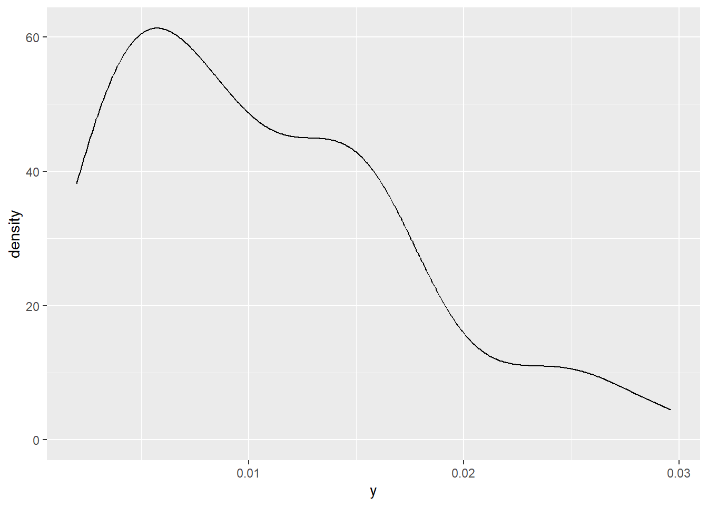
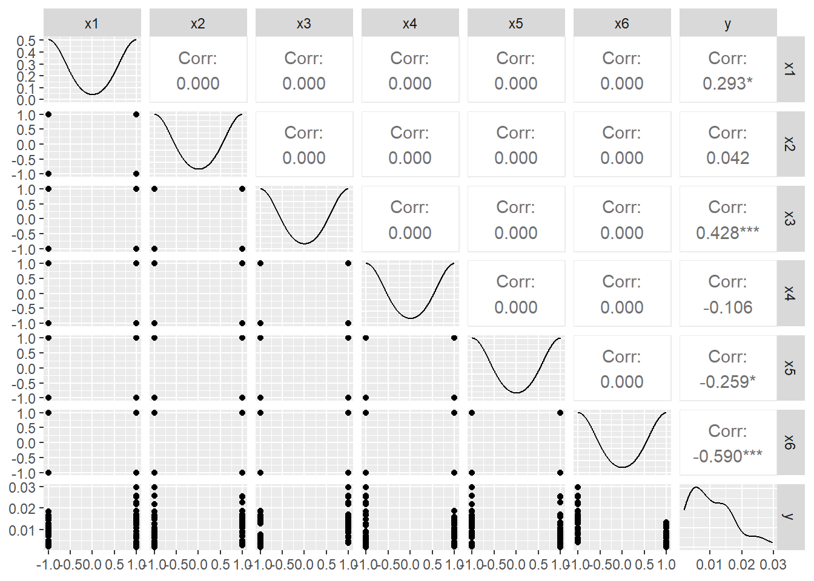

23 GLMM gamma
En este capítulo se presenta un ejemplo de glmm con variable respuesta gamma.
A continuación la base de datos a utilizar.
En este ejemplo, analizamos los datos de semiconductores tomados de Myers et al. (2002), que implica un experimento diseñado en una planta de semiconductores. Se emplean seis factores, temperatura de laminación, tiempo de laminación, presión de laminación, temperatura de cocción, tiempo de ciclo de cocción y punto de rocío de cocción, y estamos interesados en la curvatura de los dispositivos de sustrato producidos en la planta. La medición de la curvatura se realiza cuatro veces en cada dispositivo fabricado. Cada variable de diseño se toma en dos niveles. Se sabe que la medida no tiene una distribución normal y las medidas tomadas en el mismo dispositivo están correlacionadas. Myers et al. (2002) consideraron un modelo de respuesta gamma con un enlace logarítmico y utilizaron un método GEE asumiendo una correlación de trabajo AR(1).
Las variables de la base de datos se muestran a continuación.
- Device: Subtrate device
- x1: Lamination Temperature; two levels +1 and -1.
- x2: Lamination Time; two levels: +1 and -1.
- x3: Lamination Presure; two levels: +1 and -1.
- x4: Firing Temperature; two levels: +1 and -1.
- x5: Firing Cycle Time; two levels: +1 and -1.
- x6: Firing Dew Point: two levels: +1 and -1.
- y: Camber measure; in 1e-4 in./in.
Vamos a explorar las primeras líneas de la base de datos.
## Device x1 x2 x3 x4 x5 x6 y
## 1 1 -1 -1 -1 -1 -1 -1 0.0167
## 2 1 -1 -1 -1 -1 -1 -1 0.0128
## 3 1 -1 -1 -1 -1 -1 -1 0.0149
## 4 1 -1 -1 -1 -1 -1 -1 0.0185
## 5 2 1 -1 -1 -1 1 1 0.0062El siguiente código sirve para construir una densidad para la variable respuesta.

De la figura anterior vemos que la variable respuesta tomá solo valores positivos.
## Registered S3 method overwritten by 'GGally':
## method from
## +.gg ggplot2
El primer modelo que vamos a ajustar contiene todos los factores x y se puede representar de la siguiente manera.
\[\begin{align*} y_{ij} | b_0 &\sim Gamma(\mu_{ij}, \phi) \\ \log(\mu_{ij}) &= \beta_0 + \beta_1 x1_{ij} + \beta_2 x2_{ij} + \beta_3 x3_{ij} + \beta_4 x4_{ij} + \beta_5 x5_{ij} + \beta_6 x6_{ij} + b_{0i} \\ b_{0} &\sim N(0, \sigma^2_{b0}) \end{align*}\]
Para ajustar el modelo anterior usamos el siguiente código.
library(lme4)
mod1 <- glmer(y ~ x1 + x2 + x3 + x4 + x5 + x6 + (1 | Device),
data = semiconductor,
family = Gamma(link = log))
summary(mod1)## Generalized linear mixed model fit by maximum likelihood (Laplace
## Approximation) [glmerMod]
## Family: Gamma ( log )
## Formula: y ~ x1 + x2 + x3 + x4 + x5 + x6 + (1 | Device)
## Data: semiconductor
##
## AIC BIC logLik deviance df.resid
## -547.0 -527.6 282.5 -565.0 55
##
## Scaled residuals:
## Min 1Q Median 3Q Max
## -1.8492 -0.5712 -0.1592 0.7227 2.5022
##
## Random effects:
## Groups Name Variance Std.Dev.
## Device (Intercept) 0.02734 0.1653
## Residual 0.09655 0.3107
## Number of obs: 64, groups: Device, 16
##
## Fixed effects:
## Estimate Std. Error t value Pr(>|z|)
## (Intercept) -4.7117204 0.0752768 -62.592 < 2e-16 ***
## x1 0.1842486 0.0752816 2.447 0.01439 *
## x2 0.0008432 0.0752894 0.011 0.99106
## x3 0.3074319 0.0752836 4.084 4.43e-05 ***
## x4 -0.0125486 0.0752601 -0.167 0.86758
## x5 -0.1943372 0.0752885 -2.581 0.00984 **
## x6 -0.3660413 0.0752584 -4.864 1.15e-06 ***
## ---
## Signif. codes: 0 '***' 0.001 '**' 0.01 '*' 0.05 '.' 0.1 ' ' 1
##
## Correlation of Fixed Effects:
## (Intr) x1 x2 x3 x4 x5
## x1 0.000
## x2 0.001 0.021
## x3 0.000 0.008 0.023
## x4 -0.001 0.005 0.014 -0.007
## x5 0.000 0.023 0.008 0.021 0.008
## x6 0.000 -0.007 0.008 0.005 0.008 0.014Del resumen anterior se observa que los factores x2 y x4 no son significativos, por esa razón vamos a ajustar otro modelo sin esos factores, el modelo se puede representar así.
\[\begin{align*} y_{ij} | b_0 &\sim Gamma(\mu_{ij}, \phi) \\ \log(\mu_{ij}) &= \beta_0 + \beta_1 x1_{ij} + \beta_3 x3_{ij} + \beta_5 x5_{ij} + \beta_6 x6_{ij} + b_{0i} \\ b_{0} &\sim N(0, \sigma^2_{b0}) \end{align*}\]
Para ajustar el modelo anterior usamos el siguiente código.
mod2 <- glmer(y ~ x1 + x3 + x5 + x6 + (1 | Device),
data = semiconductor,
family = Gamma(link = log))
summary(mod2)## Generalized linear mixed model fit by maximum likelihood (Laplace
## Approximation) [glmerMod]
## Family: Gamma ( log )
## Formula: y ~ x1 + x3 + x5 + x6 + (1 | Device)
## Data: semiconductor
##
## AIC BIC logLik deviance df.resid
## -551.0 -535.9 282.5 -565.0 57
##
## Scaled residuals:
## Min 1Q Median 3Q Max
## -1.8424 -0.5565 -0.1762 0.7429 2.4663
##
## Random effects:
## Groups Name Variance Std.Dev.
## Device (Intercept) 0.02744 0.1657
## Residual 0.09652 0.3107
## Number of obs: 64, groups: Device, 16
##
## Fixed effects:
## Estimate Std. Error t value Pr(>|z|)
## (Intercept) -4.71177 0.07542 -62.475 < 2e-16 ***
## x1 0.18429 0.07541 2.444 0.0145 *
## x3 0.30732 0.07540 4.076 4.59e-05 ***
## x5 -0.19423 0.07543 -2.575 0.0100 *
## x6 -0.36594 0.07540 -4.853 1.21e-06 ***
## ---
## Signif. codes: 0 '***' 0.001 '**' 0.01 '*' 0.05 '.' 0.1 ' ' 1
##
## Correlation of Fixed Effects:
## (Intr) x1 x3 x5
## x1 0.000
## x3 0.000 0.008
## x5 0.000 0.023 0.021
## x6 0.000 -0.007 0.005 0.014Para comparar los dos modelos ajustados propuestos colocamos los resultados en una única tabla como se muestra a continuación.
##
## =================================================
## Model 1 Model 2
## -------------------------------------------------
## (Intercept) -4.71 *** -4.71 ***
## (0.08) (0.08)
## x1 0.18 * 0.18 *
## (0.08) (0.08)
## x2 0.00
## (0.08)
## x3 0.31 *** 0.31 ***
## (0.08) (0.08)
## x4 -0.01
## (0.08)
## x5 -0.19 ** -0.19 *
## (0.08) (0.08)
## x6 -0.37 *** -0.37 ***
## (0.08) (0.08)
## -------------------------------------------------
## AIC -546.99 -550.96
## BIC -527.56 -535.85
## Log Likelihood 282.50 282.48
## Num. obs. 64 64
## Num. groups: Device 16 16
## Var: Device (Intercept) 0.03 0.03
## Var: Residual 0.10 0.10
## =================================================
## *** p < 0.001; ** p < 0.01; * p < 0.05El problema de comparar los dos modelos se puede resumir con \(H_0:\) las variables x2 y x4 no aportan al modelo, versus, \(H_A:\) al menos una de esas variables si aporta al modelo.
Para abordar el problema lo podemos hacer por medio de la prueba razón de verosimilitud. Debemos tener en cuenta que el modelo 1 tiene 9 parámetros y el modelo 2 tiene 7 parámetros.
## 'log Lik.' 0.02762921 (df=7)## 'log Lik.' 0.9862804 (df=7)De la salida anterior se tiene que el valor-P = 0.9862804 y mayor que cualquier \(\alpha\), eso significa que no hay evidencia para rechazar \(H_0\), en otras palabras, las variables x2 y x4 no aportan al modelo.
La prueba de verosimilitud se puede obtener también así:
## Data: semiconductor
## Models:
## mod2: y ~ x1 + x3 + x5 + x6 + (1 | Device)
## mod1: y ~ x1 + x2 + x3 + x4 + x5 + x6 + (1 | Device)
## npar AIC BIC logLik deviance Chisq Df Pr(>Chisq)
## mod2 7 -550.96 -535.85 282.48 -564.96
## mod1 9 -546.99 -527.56 282.50 -564.99 0.0276 2 0.9863Es posible obtener el valor-P anterior usando boostrap por medio de la función PBmodcomp del paquete pbkrtest de Halekoh and Højsgaard (2021).
Bootstrap test; time: 100.44 sec; samples: 100; extremes: 100;
large : y ~ x1 + x2 + x3 + x4 + x5 + x6 + (1 | Device)
y ~ x1 + x3 + x5 + x6 + (1 | Device)
stat df p.value
LRT 0.0276 2 0.9863
PBtest 0.0276 1.0000
---
Signif. codes: 0 ‘***’ 0.001 ‘**’ 0.01 ‘*’ 0.05 ‘.’ 0.1 ‘ ’ 1En el código anterior se usó la semilla seed = 123 para simular los nuevos conjuntos de datos. De la salida anterior se observa que el valor-P es mayor que un 5% con lo que se concluye que no hay evidencias para rechazar \(H_0\).